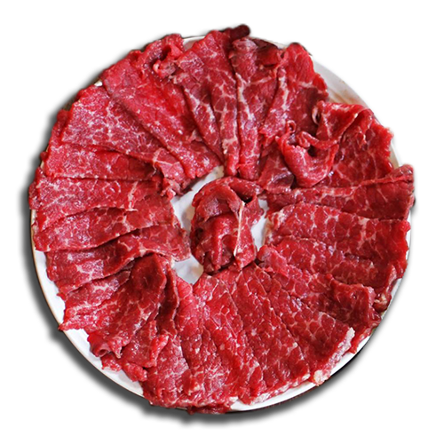

<!doctype html>
<html>
<head>
  <meta charset="utf-8">

 <title> A Heart's Meal</title>
		<meta name="description" content="A Heart's Meal is a project created by Kevin Cadena for Type III where participants cook meals from home and then interview with Kevin Cadena about their home" >
                  <meta http-equiv="author" content="A Heart's Meal with">
                 <meta name="keyword" content="A Heart's Meal With, Food, Cooking, Jan Fairbarn, Graphic Design, Typography ">
				  <meta name="viewport" content="width=device-width, initial-scale=1.0">
				  
  <script src="https://ajax.googleapis.com/ajax/libs/jquery/1.10.2/jquery.min.js"></script>
  <script src="https://cdnjs.cloudflare.com/ajax/libs/jquery.pep/0.4.0/jquery.pep.min.js"></script>
  <script src="https://rawgithub.com/ngryman/jquery.finger/v0.1.0-alpha/dist/jquery.finger.js"></script>
  <link rel="stylesheet"  href="css/stylesheet.css" type="text/css">
 <link href='http://fonts.googleapis.com/css?family=Oswald:400,700,300|Pacifico' rel='stylesheet' type='text/css'>
 <link href='http://fonts.googleapis.com/css?family=Lora:400,700,400italic' rel='stylesheet' type='text/css'>
 </head>

<body>

  <div id="name">
  </div>
  <div id="share">
	<a target="_blank" href="../../index.html">
    <!--  -->
	</a>
  </div>
  

          <div class="fdwrap"><h1 id="head">
	          <br/>
          </h1>
          
          <div class="navwrap">
	      <a href="../Indhu/index.html"><div class="plate"></div></a>
	      <a href="../Luis/index.html"><div class="plate"></div></a>
          <a href="../Aki/index.html"><div class="plate"></div></a>
		  <a href="../Danielle/index.html"><div class="plate"></div>
          <a href="../Annalia/index.html"><div class="plate"></div></a>
          <a href="../Klaudia/index.html"><div class="plate"></div></a>
           <a href="../../index.html"><div class="plate"></div></a>
           <a href="../About/index.html"><div class="plate"></div></a>
             
          </div>
          </div>
          
          <div class="intwrap">
	         <div class="imgwrap">
		         k
		        </div>
          <div class="textwrap">

	      <ul id="nav">
		      <li>
		      <a href="#o">
			      <span class="noshow">
			      <h1 id="#o">Lunchables, a cornerstone of highly processed food in america. Lunchables were invented in 1985 as a way to sell more of Oscar Mayer's bologna meat.
				      
			      </h1></span>
				  <span class="show">
			      <h1>That Oscar Mayer bologna meat actually reminds me of home! I think about how we always had some in the fridge and I always hated it. 
				      
			      </h1></span></a></li></a></li></ul>
          <p id="int">Can you tell us what we have bought here today?  </p>
<p>We have Lunchables, a pizza one and a turkey/american cheese one. <br/><br/> </p>


<p id="int">
Which one you taking? 
<p>I’ll take the turkey and american.  </p>
<p id="int">
Yeah?
<p>Yeah.  </p>
<p id="int">(We start opening up the box)
<p>Had this stuff all the time in Elementary; Like during second grade? This was the shit! </p>
<p id="int">So Lunchables—Yeah please explain a little bit further as to why Lunchables. </p>
<p>It’s just salty and good, just like other junk food. They’re like overpriced, and you don’t really get anything but I mean it’s worth it. 
</p>
<p id="int">(We both laugh)<br/> Where did you grow up?</p>
<p>I grew up in Orlando, Florida in a place called Altamonte Springs.</p> 
</div>
<div class="imgwrap">
<p id="itl">Altamonte Springs.</p></div>
<div class="margin"></div>
<div class="textwrap">
	<p id="int">Oh dude I'm from Orlando too!</p>
	<p>Oh yeah? There's so much Disney everywhere. That, and Universal.</p>
	<p id="int">The land of highly processed.</p>
	<p>Agreed.</p>
	<p id="int">It’s funny that lunchables also remind you of home. </p>
</div>
<div class="imgwrap">
	<div class="quowrap">
 <ul id="nav"><li><a href="#o"><span class="noshow"><h1 id="n" class="new">"Yeah, whenever I would go on field trips for school. <br/> I remember getting one of these and eating it during break time."</h1></span><span class="show"><h1 id="white">Same during my childhood. I actually looked forward to field trips because it meant no school and my mom would buy me Lunchables. </h1></span></a></li></a></li></ul>
 	</div>

<div class="textwrap">
<p id="int"><br/><br/>So those are the memories you think of when reminded of home? Field trips?  </p>
<p>Right, field trips and kindergarten and sitting on these metal seats backwards to use as a table on field trips. I did all of that as a kid. It was really great. </p> 
<p id="int">So lunchables remind you more of being a kid, Can you tell me a bit more about your actual home?  </p>
<p>Um, it was in a gated community; I didn’t eat lunchables then. It was more occasional food since its so unhealthy. I eventually moved to Shanghai when I was eight. So not much of this after that, since it would have to be imported and even more overpriced but it isn’t worth it at that point. <br/><br/> I see lunchables as an occasional craving from Childhood.  </p>
</div>
<div class="imgwrap">
<p id="itl">Shanghai.</p></div>
<div class="margin"></div>
<div class="textwrap">
	
<p id="int">Which would you consider more your home? Shanghai or Florida? 
</p>
<p>I think they were both my home at some point but now I wouldn’t consider either of them to be my home.  </p>
<p id="int">There isn’t one you’d be particular to go back to? 
</p>
</div>
<div class="imgwrap">


<div class="quowrap" id="large">
<ul id="nav"><li><a href="#y"><span class="noshow"><h1 id="n" class="new">"Nah they’re both places that were once my home but not really anymore. My home is like always change. If you move when you’re young, you start to see change as a constant thing and so that’s how I feel towards home. It’s never just one place. "</h1></span><span class="show" id="white"><h1>Hearing him say this makes me think of when my family moved to Orlando from New York when I was young. I find a lot of truth in his statement. Home isn't one place for me either.</h1></span></a></li></a></li></ul></div>
</div>
<div class="textwrap">
<p id="int"><br/>Well where could you see yourself living in the future?  </p>

<p>Well, right now we have a house in Seattle and so if I had to choose where to work, it’d probably be in Seattle since we have a house and a car there. It’s convenient and I really like Seattle a lot. It’s become <br/>really modern. </p>

<p id="int">Yeah Seattle seems really nice. I’d love to eventually go out there but I don’t know if I’d want to live there. Too much rain for my tastes. Going off that, is there anything that could remind you of home more than food? 
</p>
<p>Well.. my mom’s cooking I guess, but I can get that anywhere she is, it’s not a particular place. 
<br/><br/>
That’s basically it since otherwise I’ll eat anything. The occasional junk food is what has strong memories of home and that’s weird to think about.</p>
<p id="int">Is there anything that was missing from you home when you were growing up? </p>
<p>Yeah; A Nintendo 64. <br/><br/></p>
<p id="int"> (I let out a huge laugh) </p>
<p>Yeah my parents would get me legos but never video games! </p>
<p id="int">That probably comes from the culture?</p>
<p>Probably.</p>
<p id="int">Would you say your family was very traditional?</p>
<p>Actually not at all, though they definitely made me try and learn Chinese because of living in shanghai but otherwise they were very understanding and laid back. They gave me a lot of freedom and I appreciated that.</p>
<p id="int">Listening to that, it reminds me of the term ‘Third Culture Kid’ are you familiar with it? </p>
</div>
<div class="imgwrap">


<div class="quowrap">
<ul id="nav"><li><a href="#y"><span class="noshow"><h1 id="n" class="new">"Yeah! A couple of kids I went to middle school with, were pretty much the same background as me; Being from a different country and then moving to shanghai. It was a nice little group we had."</h1></span><span class="show" id="white"><h1>For me it was more of my grandmother's cooking as opposed to my mom's. My mom was usually working all day long so she only ever cooked on Sundays.</h1></span></a></li></a></li></ul></div>
</div>
<div class="margin"></div>
<div class="textwrap">
<p id="int">Did you ever face any struggles being a third culture kid?</p>

<p>Nah, I wouldn’t say that. Probably just the long plane rides. </p>


<p id="int"><br/>(I laugh again)<br/><br/>
You’re very down to earth with your answers. I like that. 
 </p>
<p>Yeah, I would say there aren’t any real negatives outside of your friend group shifting around a lot but it definitely prepares you for later when change becomes a bigger part of your life.  </p>
 <p id="int"><br/>Wise words, man. Wise words. I wanted to ask one last question.  
 </p>

<p>Sure. <br/><br/></p>
<p id="int">Did cooking this meal here today remind you of home? </p>
<p>Yeah dude, totally!</p>
<p id="int">
Alright, well thank you so much for joining me on A Heart’s Meal. It was a pleasure having you! 
</p>
<p>No problem dude. </p>
</div>
<div class="imgwrap">
<div class="quowrap" id="large">
<p class="int" ><br/>This meal was bought at Walgreen's with <a href="https://www.facebook.com/BestMarbleNA?fref=ts">Kevin Ma</a> (RISD GD'16) Thank you for viewing, please click on any of the other plates to view the interviews!</p></div></div>
          </div>
                <script type="text/javascript">
  $(function() {
    $( ".draggable" ).pep();
    $('[data-url]').on('doubletap', function() {
      window.location.href = $(this).data('url');
    });
  });
  $(".noshow").click(function(){
    var that=$(this);
    that.stop().fadeOut(400,function(){
        that.parent().find(".show").stop().fadeIn(400);
    });
});
$(".show").click(function(){
    var that=$(this);
    that.stop().fadeOut(400,function(){
        that.parent().find(".noshow").stop().fadeIn(400);
    });
});

		$("#slideshow > div:gt(0)").hide();

setInterval(function() { 
  $('#slideshow > div:first')
    .fadeOut(1000)
    .next()
    .fadeIn(1000)
    .end()
    .appendTo('#slideshow');
},  3000);

$(document).ready(function(){
    // to fade in on page load
    $("body").css("display", "none");
    $("body").fadeIn(400); 
})
jQuery(function($) {
    $('a').click(function() {
        return false;
    }).dblclick(function() {
        window.location = this.href;
        return false;
    });
});
</script>
</body>
</html>
